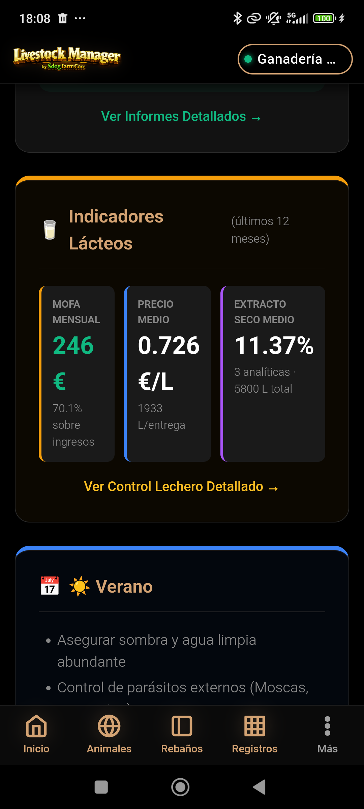

🔬 Reproducción
Ciclo Reproductivo, Genealogía y Trazabilidad Madre-Cría — Guía paso a paso
MANUAL PRÁCTICO · Gestión del ciclo reproductivo
Ciclo Reproductivo, Genealogía y Trazabilidad Madre-Cría — Guía paso a paso
Este manual documenta el módulo de Reproducción de Livestock Manager. El registro del ciclo reproductivo es esencial para:
El ciclo reproductivo es el período desde que un animal entra en celo hasta que se desteta la cría. Comprende varias fases:
Accede al módulo de reproducción desde Registros → Animales → pestaña Reproducción, o desde la ficha de un animal pulsando el botón ➕ Evento Reproductivo.
Desde la pantalla principal puedes:
El sistema soporta 8 tipos de eventos que cubren todo el ciclo reproductivo.
| Tipo de evento | Icono | Descripción | Etapa del ciclo |
|---|---|---|---|
| Celo | 🔴 | Detección de celo/estro (receptividad reproductiva) | Inicio del ciclo |
| Inseminación Artificial (IA) | 💉 | Aplicación de semen congelado (técnica controlada) | Servicio |
| Monta Natural | 🐏 | Servicio con macho vivo en la explotación | Servicio |
| Diagnóstico Gestación | 📋 | Confirmación de preñez (ecografía, análisis sérico) | Post-servicio |
| Secado | 🚫 | Cese de ordeño antes del parto (lecheras) | Pre-parto |
| Parto | 👶 | Nacimiento de cría(s) | Nacimiento |
| Aborto | ⚠️ | Pérdida de gestación (accidental o inducida) | Anómalo |
| Destete | 🐑 | Separación de madre e hijo(a) | Post-parto |
Cada evento reproductivo almacena información sobre la fecha, el resultado y los animales involucrados.
| Campo | Tipo | Obligatorio | Descripción |
|---|---|---|---|
| tipo_evento | Enum | Sí | Celo, IA, Monta, Diagnóstico, Parto, Destete, Aborto, Secado |
| fecha | Fecha | Sí | Fecha del evento |
| animalId | Ref. Animal | Sí | Animal afectado (madre/hembra) |
| Tipo | Campos adicionales |
|---|---|
| Celo | Ninguno (solo fecha y animal) |
| IA / Monta Natural | semenalId (padre/macho), observaciones |
| Diagnóstico | resultado (positivo/negativo), dias_gestacion |
| Parto | crias_vivas (número), crias_muertas (número), observaciones (complicaciones) |
| Destete | edad_dias, peso_destete (kg) |
| Aborto | causa (desconocida, infecciosa, traumática), observaciones |
| Secado | Ninguno (solo marca fecha de cese) |
Un ciclo reproductivo típico se registra en 4 pasos secuenciales (ejemplos con fechas reales):
El sistema automáticamente crea vínculos genealógicos cuando registras un evento de parto. Esto permite trazar la genealogía completa de cada animal.
| Dato | Cómo se captura | Uso |
|---|---|---|
| Madre | Automáticamente del evento de parto (animalId) | Trazabilidad directa |
| Padre | Del evento de IA o Monta (semenalId) | Genealogía, evitar consanguinidad |
| Abuelos maternos | De la madre (datos históricos) | Genealogía extendida |
| Abuelos paternos | Del padre (datos históricos) | Genealogía extendida |
| Hermanos | Otros animales con la misma madre y padre | Grupo genético |
Esta información se usa para:
El historial reproductivo es una visualización cronológica de todos los eventos de un animal desde su pubertad (primer celo) hasta hoy.
| Campo | Descripción |
|---|---|
| Fecha | Cuándo ocurrió el evento |
| Evento | Tipo (celo, IA, diagnóstico, parto, etc.) |
| Resultado | Resultado específico (ej: diagnóstico positivo, 1 cría viva) |
| Pareja | Macho usado en IA/Monta (si aplica) |
| Cría(s) | Descendencia registrada en partos |
| Intervalo | Días desde el evento anterior (ej: celo-IA: 1 día, celo-celo: 21 días) |
El sistema genera alertas automáticas para eventos reproductivos próximos o desviaciones en el ciclo normal.
| Alerta | Condición | Indicación |
|---|---|---|
| 🟡 Parto próximo | Menos de 30 días para la fecha estimada | Etiqueta naranja, preparar alojamiento |
| 🔴 Retención de placenta | Si el evento de parto indica complicación | Etiqueta roja, requiere atención veterinaria |
| 🟡 Próximo celo esperado | Si han pasado 18-24 días desde último celo sin diagnóstico positivo | Alerta para detección de celo |
| ⚫ Diagnóstico pendiente | Ha pasado más de 60 días desde IA sin diagnóstico registrado | Recuerdo para hacer diagnóstico |
El módulo de Informes incluye análisis de fertilidad y eficiencia reproductiva basados en los eventos registrados.
El seed data incluye un ciclo reproductivo completo de vaca1 (Vaca Frisona) con 4 eventos secuenciales desde celo hasta parto.
| # | Fecha | Tipo evento | Detalle | Intervalo |
|---|---|---|---|---|
| 1 | 01/06/2026 | 🔴 Celo | Detección de primer celo post-destete | — |
| 2 | 02/06/2026 | 💉 Inseminación Artificial | Semental: Reproductor-5 (Frisón); Fecha estimada parto: 10/03/2027 | 1 día |
| 3 | 30/06/2026 | 📋 Diagnóstico Gestación | Resultado: POSITIVO; 28 días de gestación (ecografía confirma embrión) | 28 días |
| 4 | 09/03/2027 | 👶 Parto | 1 cría viva (ternera Frisona); Madre-cría vinculadas automáticamente | 252 días |
| Campo | Valor |
|---|---|
| Madre | vaca1 (Vaca Frisona, ES123456789012) |
| Padre | Reproductor-5 (Semental Frisón, ES123456789XXX) |
| Crías nacidas | 1 viva, 0 muertas |
| Sexo cría | Hembra (ternera) |
| Crotal cría | ES123456789017 (asignado automáticamente) |
| Peso al nacimiento | 45 kg (estimado) |
| Observaciones | Parto sin complicaciones, cría vigorosa, amamantamiento normal |
| Genealogía creada | Abuelo paterno: semen congelado; Abuelas maternas: desconocidas (vaca1 es base) |
Secuencia visual del ciclo reproductivo y la trazabilidad genealógica.
